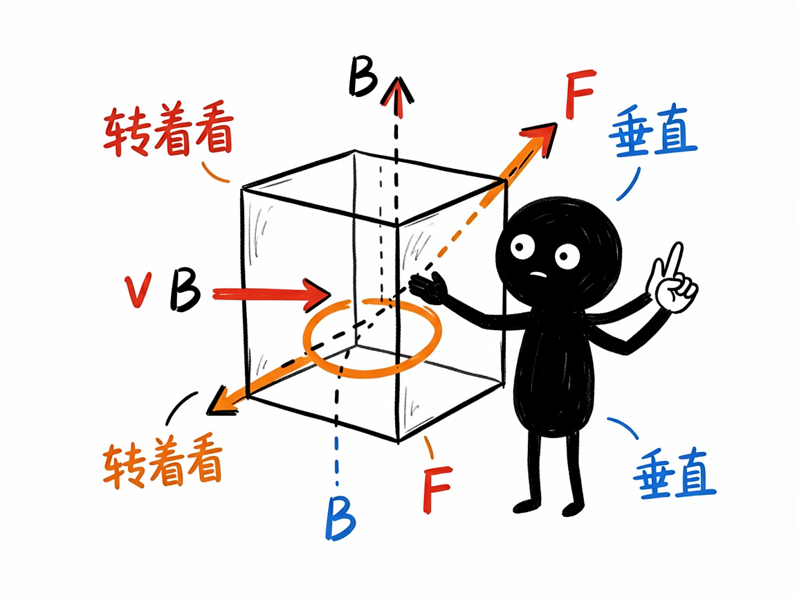
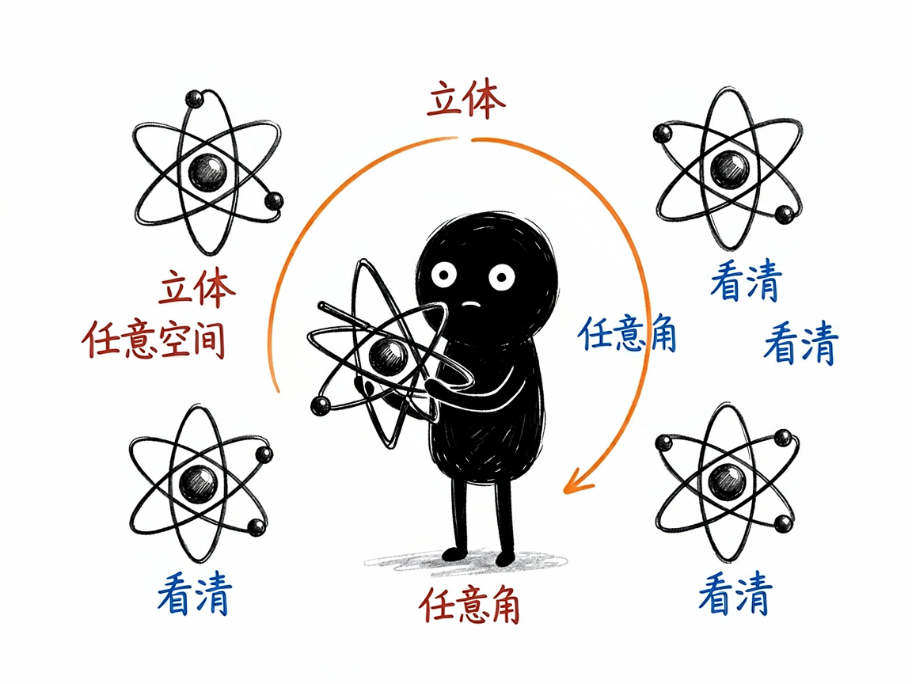

那些必须转着看的物理现象，怎么变成能旋转的 3D 网页 —— edu-physics-3d 介绍
有些物理内容，硬塞进一张平面图是讲不明白的。比如洛伦兹力 F=qv×B，力的方向同时垂直于速度和磁场，只能在三维里比划；再比如原子轨道、晶体结构、电磁波的正交传播，本来就是立体空间里的事。课本上画个侧面图，学生常常转到晕。
edu-physics-3d 就是来解决这件事的。
你给它一个需要三维展示的物理场景，它还你一个能随意旋转、缩放、平移的网页：左边题面加控制台，中间分步推导，右边是用 Three.js（网页三维绘图技术）搭的立体画板，粒子、箭头、轨道曲线都在空间里摆着，你拖一拖就能从任意角度看清关系。

它到底能做什么
- 把三维物理场景做成三栏交互网页：题面 + 滑块控制台 + KaTeX 分步解析 + 可旋转的 3D 画板。
- 用一根滑块（角度、时间、速度等）驱动实时重算，3D 里的箭头、球体、轨迹曲线跟着变。
- 画板支持鼠标拖动旋转、滚轮缩放、平移，能从任意角度观察空间关系，比死板的平面图直观得多。
- 擅长这类"必须 3D"的内容：洛伦兹力与叉乘、右手定则、原子轨道形状、晶体/晶格结构、刚体旋转与角动量、三维磁场、电磁波正交传播。
- 同样会显示"守恒定律"指示，比如带电粒子在磁场里运动时速率恒定，网页会一直亮着提示。
- 通过 CDN（在线加载三维库）工作，不需要在本地装 sympy 之类的程序库。
一个具体例子
你跟会用这个项目的 AI 说：
把"洛伦兹力"做成一个能拖动角度滑块、从任意角度看
v、B、F 三个箭头方向的 3D 交互网页。
AI 会生成一个 solution-洛伦兹力.html。打开后，从同一点伸出的三个箭头分别代表速度 v、磁场 B、洛伦兹力 F，你旋转视角、拖动角度滑块，就能亲手验证"F 永远垂直于 v 和 B 所在平面"这个右手定则。

谁适合用
- 高中/大学物理老师讲电磁学、原子物理、固体物理等立体内容。
- 学生攻克"空间想象"这个老大难。
- 科普作者做三维物理互动演示。
- 需要立体示意的教学内容制作者。
一点说明 / 小提示
这个项目是给"做 AI 工具 / 做课件的人"用的技能（skill），不是普通人直接打开的 App；你把场景交给会用它的 AI，它帮你产出网页。它和 edu-physics 是分工关系：二维够用的（抛体、振动、波、光学）用 edu-physics，涉及三维空间的非它莫属。它需要联网加载 Three.js 三维库，所以打开网页时最好有网络。具体支持哪些 3D 对象类型，以项目模板实际能力为准。